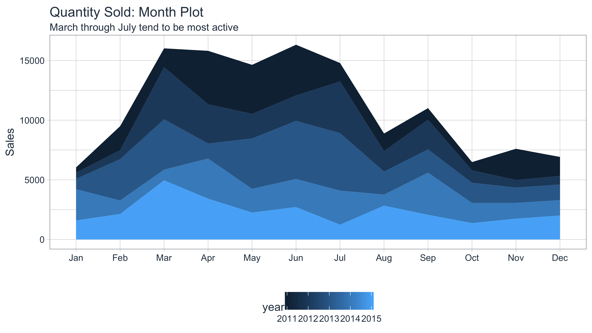
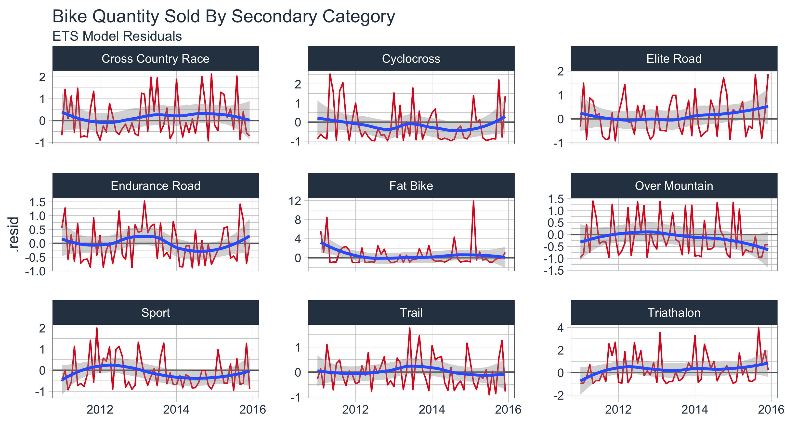
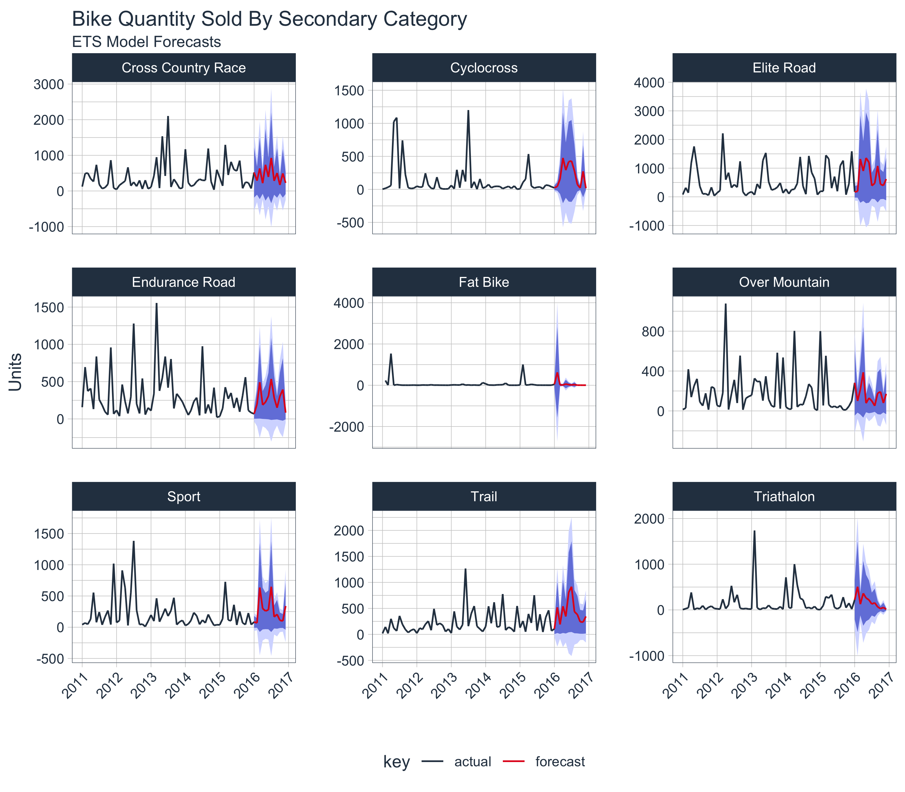

Extending
broomto time series forecasting
One of the most powerful benefits of sweep is that it helps forecasting at scale within the “tidyverse”. There are two common situations:
In this vignette we’ll review how sweep can help the first situation: Applying a model to groups of time series.
Before we get started, load the following packages.
library(forecast)
library(tidyquant)
library(timetk)
library(sweep)We’ll use the bike sales data set, bike_sales, provided with the sweep package for this tutorial. The bike_sales data set is a fictional daily order history that spans 2011 through 2015. It simulates a sales database that is typical of a business. The customers are the “bike shops” and the products are the “models”.
bike_sales## # A tibble: 15,644 x 17
## order.date order.id order.line quantity price price.ext customer.id
## <date> <dbl> <int> <dbl> <dbl> <dbl> <dbl>
## 1 2011-01-07 1 1 1 6070 6070 2
## 2 2011-01-07 1 2 1 5970 5970 2
## 3 2011-01-10 2 1 1 2770 2770 10
## 4 2011-01-10 2 2 1 5970 5970 10
## 5 2011-01-10 3 1 1 10660 10660 6
## 6 2011-01-10 3 2 1 3200 3200 6
## 7 2011-01-10 3 3 1 12790 12790 6
## 8 2011-01-10 3 4 1 5330 5330 6
## 9 2011-01-10 3 5 1 1570 1570 6
## 10 2011-01-11 4 1 1 4800 4800 22
## # ... with 15,634 more rows, and 10 more variables: bikeshop.name <chr>,
## # bikeshop.city <chr>, bikeshop.state <chr>, latitude <dbl>,
## # longitude <dbl>, product.id <dbl>, model <chr>,
## # category.primary <chr>, category.secondary <chr>, frame <chr>We’ll analyse the monthly sales trends for the bicycle manufacturer. Let’s transform the data set by aggregating by month.
bike_sales_monthly <- bike_sales %>%
mutate(month = month(order.date, label = TRUE),
year = year(order.date)) %>%
group_by(year, month) %>%
summarise(total.qty = sum(quantity))
bike_sales_monthly## # A tibble: 60 x 3
## # Groups: year [?]
## year month total.qty
## <dbl> <ord> <dbl>
## 1 2011 Jan 440
## 2 2011 Feb 2017
## 3 2011 Mar 1584
## 4 2011 Apr 4478
## 5 2011 May 4112
## 6 2011 Jun 4251
## 7 2011 Jul 1550
## 8 2011 Aug 1470
## 9 2011 Sep 975
## 10 2011 Oct 697
## # ... with 50 more rowsWe can visualize package with a month plot using the ggplot2 .
bike_sales_monthly %>%
ggplot(aes(x = month, y = total.qty, group = year)) +
geom_area(aes(fill = year), position = "stack") +
labs(title = "Quantity Sold: Month Plot", x = "", y = "Sales",
subtitle = "March through July tend to be most active") +
scale_y_continuous() +
theme_tq()
Suppose Manufacturing wants a more granular forecast because the bike components are related to the secondary category. In the next section we discuss how sweep can help to perform a forecast on each sub-category.
First, we need to get the data organized into groups by month of the year. We’ll create a new “order.month” date using zoo::as.yearmon() that captures the year and month information from the “order.date” and then passing this to lubridate::as_date() to convert to date format.
monthly_qty_by_cat2 <- bike_sales %>%
mutate(order.month = as_date(as.yearmon(order.date))) %>%
group_by(category.secondary, order.month) %>%
summarise(total.qty = sum(quantity))
monthly_qty_by_cat2## # A tibble: 538 x 3
## # Groups: category.secondary [?]
## category.secondary order.month total.qty
## <chr> <date> <dbl>
## 1 Cross Country Race 2011-01-01 122
## 2 Cross Country Race 2011-02-01 489
## 3 Cross Country Race 2011-03-01 505
## 4 Cross Country Race 2011-04-01 343
## 5 Cross Country Race 2011-05-01 263
## 6 Cross Country Race 2011-06-01 735
## 7 Cross Country Race 2011-07-01 183
## 8 Cross Country Race 2011-08-01 66
## 9 Cross Country Race 2011-09-01 97
## 10 Cross Country Race 2011-10-01 189
## # ... with 528 more rowsNext, we use the nest() function from the tidyr package to consolidate each time series by group. The newly created list-column, “data.tbl”, contains the “order.month” and “total.qty” columns by group from the previous step. The nest() function just bundles the data together which is very useful for iterative functional programming.
monthly_qty_by_cat2_nest <- monthly_qty_by_cat2 %>%
group_by(category.secondary) %>%
nest(.key = "data.tbl")
monthly_qty_by_cat2_nest## # A tibble: 9 x 2
## category.secondary data.tbl
## <chr> <list>
## 1 Cross Country Race <tibble [60 x 2]>
## 2 Cyclocross <tibble [60 x 2]>
## 3 Elite Road <tibble [60 x 2]>
## 4 Endurance Road <tibble [60 x 2]>
## 5 Fat Bike <tibble [58 x 2]>
## 6 Over Mountain <tibble [60 x 2]>
## 7 Sport <tibble [60 x 2]>
## 8 Trail <tibble [60 x 2]>
## 9 Triathalon <tibble [60 x 2]>The forecasting workflow involves a few basic steps:
ts object class.ts object classIn this step we map the tk_ts() function into a new column “data.ts”. The procedure is performed using the combination of dplyr::mutate() and purrr::map(), which works really well for the data science workflow where analyses are built progressively. As a result, this combination will be used in many of the subsequent steps in this vignette as we build the analysis.
The mutate() function adds a column, and the map() function maps the contents of a list-column (.x) to a function (.f). In our case, .x = data.tbl and .f = tk_ts. The arguments select = -order.month, start = 2011, and freq = 12 are passed to the ... parameters in map, which are passed through to the function. The select statement is used to drop the “order.month” from the final output so we don’t get a bunch of warning messages. We specify start = 2011 and freq = 12 to return a monthly frequency.
monthly_qty_by_cat2_ts <- monthly_qty_by_cat2_nest %>%
mutate(data.ts = map(.x = data.tbl,
.f = tk_ts,
select = -order.month,
start = 2011,
freq = 12))
monthly_qty_by_cat2_ts## # A tibble: 9 x 3
## category.secondary data.tbl data.ts
## <chr> <list> <list>
## 1 Cross Country Race <tibble [60 x 2]> <S3: ts>
## 2 Cyclocross <tibble [60 x 2]> <S3: ts>
## 3 Elite Road <tibble [60 x 2]> <S3: ts>
## 4 Endurance Road <tibble [60 x 2]> <S3: ts>
## 5 Fat Bike <tibble [58 x 2]> <S3: ts>
## 6 Over Mountain <tibble [60 x 2]> <S3: ts>
## 7 Sport <tibble [60 x 2]> <S3: ts>
## 8 Trail <tibble [60 x 2]> <S3: ts>
## 9 Triathalon <tibble [60 x 2]> <S3: ts>Next, we map the Exponential Smoothing ETS (Error, Trend, Seasonal) model function, ets, from the forecast package. Use the combination of mutate to add a column and map to interatively apply a function rowwise to a list-column. In this instance, the function to map the ets function and the list-column is “data.ts”. We rename the resultant column “fit.ets” indicating an ETS model was fit to the time series data.
monthly_qty_by_cat2_fit <- monthly_qty_by_cat2_ts %>%
mutate(fit.ets = map(data.ts, ets))
monthly_qty_by_cat2_fit## # A tibble: 9 x 4
## category.secondary data.tbl data.ts fit.ets
## <chr> <list> <list> <list>
## 1 Cross Country Race <tibble [60 x 2]> <S3: ts> <S3: ets>
## 2 Cyclocross <tibble [60 x 2]> <S3: ts> <S3: ets>
## 3 Elite Road <tibble [60 x 2]> <S3: ts> <S3: ets>
## 4 Endurance Road <tibble [60 x 2]> <S3: ts> <S3: ets>
## 5 Fat Bike <tibble [58 x 2]> <S3: ts> <S3: ets>
## 6 Over Mountain <tibble [60 x 2]> <S3: ts> <S3: ets>
## 7 Sport <tibble [60 x 2]> <S3: ts> <S3: ets>
## 8 Trail <tibble [60 x 2]> <S3: ts> <S3: ets>
## 9 Triathalon <tibble [60 x 2]> <S3: ts> <S3: ets>At this point, we can do some model inspection with the sweep tidiers.
To get the model parameters for each nested list, we can combine sw_tidy within the mutate and map combo. The only real difference is now we unnest the generated column (named “tidy”). Last, because it’s easier to compare the model parameters side by side, we add one additional call to spread() from the tidyr package.
monthly_qty_by_cat2_fit %>%
mutate(tidy = map(fit.ets, sw_tidy)) %>%
unnest(tidy, .drop = TRUE) %>%
spread(key = category.secondary, value = estimate)## # A tibble: 16 x 10
## term `Cross Country Race` Cyclocross `Elite Road` `Endurance Road`
## * <chr> <dbl> <dbl> <dbl> <dbl>
## 1 alpha 4.555075e-02 5.031094e-03 1.625957e-02 2.303405e-01
## 2 b NA NA -2.968173e+00 NA
## 3 beta NA NA 1.617050e-02 NA
## 4 gamma 1.002045e-04 2.858051e-03 2.871286e-04 1.040584e-04
## 5 l 3.063091e+02 2.121310e+02 5.272554e+02 3.937888e+02
## 6 s0 5.397472e-01 7.058493e-02 6.535912e-01 3.087987e-01
## 7 s1 1.096653e+00 5.733242e-01 5.890414e-01 1.636969e+00
## 8 s10 7.051262e-01 2.157913e-01 3.002134e-01 6.916933e-01
## 9 s2 3.382938e-01 1.129879e-01 6.434389e-01 1.185162e+00
## 10 s3 1.064582e+00 4.861195e-01 1.317264e+00 6.156662e-01
## 11 s4 5.954871e-01 1.964938e+00 6.129129e-01 6.961011e-01
## 12 s5 1.847855e+00 2.080436e+00 7.591573e-01 2.417323e+00
## 13 s6 9.741587e-01 1.964175e+00 1.684664e+00 9.724153e-01
## 14 s7 1.789096e+00 1.980143e+00 1.810580e+00 7.834150e-01
## 15 s8 5.443293e-01 1.907924e+00 1.292572e+00 6.739009e-01
## 16 s9 1.339565e+00 5.102717e-01 2.049391e+00 1.782618e+00
## # ... with 5 more variables: `Fat Bike` <dbl>, `Over Mountain` <dbl>,
## # Sport <dbl>, Trail <dbl>, Triathalon <dbl>We can view the model accuracies also by mapping sw_glance within the mutate and map combo.
monthly_qty_by_cat2_fit %>%
mutate(glance = map(fit.ets, sw_glance)) %>%
unnest(glance, .drop = TRUE)## # A tibble: 9 x 13
## category.secondary model.desc sigma logLik AIC BIC
## <chr> <chr> <dbl> <dbl> <dbl> <dbl>
## 1 Cross Country Race ETS(M,N,M) 0.9421254 -463.9877 957.9754 989.3905
## 2 Cyclocross ETS(M,N,M) 0.9185746 -402.8330 835.6659 867.0811
## 3 Elite Road ETS(M,A,M) 0.7624005 -468.7947 971.5895 1007.1933
## 4 Endurance Road ETS(M,N,M) 0.6889434 -438.1445 906.2891 937.7042
## 5 Fat Bike ETS(M,N,M) 1.9989967 -336.8806 703.7611 734.6678
## 6 Over Mountain ETS(M,N,M) 0.8107146 -423.7231 877.4462 908.8614
## 7 Sport ETS(M,N,M) 0.7764437 -426.9916 883.9832 915.3984
## 8 Trail ETS(M,A,M) 0.6233628 -409.5452 853.0905 888.6944
## 9 Triathalon ETS(M,N,M) 1.3479944 -409.3413 848.6827 880.0978
## # ... with 7 more variables: ME <dbl>, RMSE <dbl>, MAE <dbl>, MPE <dbl>,
## # MAPE <dbl>, MASE <dbl>, ACF1 <dbl>The augmented fitted and residual values can be achieved in much the same manner. This returns nine groups data. Note that we pass timetk_idx = TRUE to return the date format times as opposed to the regular (yearmon or numeric) time series.
augment_fit_ets <- monthly_qty_by_cat2_fit %>%
mutate(augment = map(fit.ets, sw_augment, timetk_idx = TRUE, rename_index = "date")) %>%
unnest(augment, .drop = TRUE)
augment_fit_ets## # A tibble: 538 x 5
## category.secondary date .actual .fitted .resid
## <chr> <date> <dbl> <dbl> <dbl>
## 1 Cross Country Race 2010-12-31 122 356.8830 -0.6581513
## 2 Cross Country Race 2011-01-31 489 209.5115 1.3340009
## 3 Cross Country Race 2011-02-28 505 422.2056 0.1960997
## 4 Cross Country Race 2011-03-31 343 173.0947 0.9815739
## 5 Cross Country Race 2011-04-30 263 594.3634 -0.5575098
## 6 Cross Country Race 2011-05-31 735 315.4110 1.3302927
## 7 Cross Country Race 2011-06-30 183 634.5486 -0.7116060
## 8 Cross Country Race 2011-07-31 66 197.8604 -0.6664315
## 9 Cross Country Race 2011-08-31 97 342.9870 -0.7171904
## 10 Cross Country Race 2011-09-30 189 105.4309 0.7926432
## # ... with 528 more rowsWe can plot the residuals for the nine categories like so. Unfortunately we do see some very high residuals (especially with “Fat Bike”). This is often the case with realworld data.
augment_fit_ets %>%
ggplot(aes(x = date, y = .resid, group = category.secondary)) +
geom_hline(yintercept = 0, color = "grey40") +
geom_line(color = palette_light()[[2]]) +
geom_smooth(method = "loess") +
labs(title = "Bike Quantity Sold By Secondary Category",
subtitle = "ETS Model Residuals", x = "") +
theme_tq() +
facet_wrap(~ category.secondary, scale = "free_y", ncol = 3) +
scale_x_date(date_labels = "%Y")
We can create decompositions using the same procedure with sw_tidy_decomp() and the mutate and map combo.
monthly_qty_by_cat2_fit %>%
mutate(decomp = map(fit.ets, sw_tidy_decomp, timetk_idx = TRUE, rename_index = "date")) %>%
unnest(decomp)## # A tibble: 538 x 6
## category.secondary date observed level season slope
## <chr> <date> <dbl> <dbl> <dbl> <dbl>
## 1 Cross Country Race 2010-12-31 122 297.1262 1.1650304 NA
## 2 Cross Country Race 2011-01-31 489 315.1810 0.7052205 NA
## 3 Cross Country Race 2011-02-28 505 317.9964 1.3395918 NA
## 4 Cross Country Race 2011-03-31 343 332.2144 0.5443828 NA
## 5 Cross Country Race 2011-04-30 263 323.7779 1.7889958 NA
## 6 Cross Country Race 2011-05-31 735 343.3974 0.9742886 NA
## 7 Cross Country Race 2011-06-30 183 332.2665 1.8477229 NA
## 8 Cross Country Race 2011-07-31 66 322.1801 0.5954473 NA
## 9 Cross Country Race 2011-08-31 97 311.6549 1.0645052 NA
## 10 Cross Country Race 2011-09-30 189 322.9074 0.3383206 NA
## # ... with 528 more rowsWe can also forecast the multiple models again using a very similar approach with the forecast function. We want a 12 month forecast so we add the argument for the h = 12 (refer to ?forecast for all of the parameters you can add, there’s quite a few).
monthly_qty_by_cat2_fcast <- monthly_qty_by_cat2_fit %>%
mutate(fcast.ets = map(fit.ets, forecast, h = 12))
monthly_qty_by_cat2_fcast## # A tibble: 9 x 5
## category.secondary data.tbl data.ts fit.ets fcast.ets
## <chr> <list> <list> <list> <list>
## 1 Cross Country Race <tibble [60 x 2]> <S3: ts> <S3: ets> <S3: forecast>
## 2 Cyclocross <tibble [60 x 2]> <S3: ts> <S3: ets> <S3: forecast>
## 3 Elite Road <tibble [60 x 2]> <S3: ts> <S3: ets> <S3: forecast>
## 4 Endurance Road <tibble [60 x 2]> <S3: ts> <S3: ets> <S3: forecast>
## 5 Fat Bike <tibble [58 x 2]> <S3: ts> <S3: ets> <S3: forecast>
## 6 Over Mountain <tibble [60 x 2]> <S3: ts> <S3: ets> <S3: forecast>
## 7 Sport <tibble [60 x 2]> <S3: ts> <S3: ets> <S3: forecast>
## 8 Trail <tibble [60 x 2]> <S3: ts> <S3: ets> <S3: forecast>
## 9 Triathalon <tibble [60 x 2]> <S3: ts> <S3: ets> <S3: forecast>Next, we can apply sw_sweep to get the forecast in a nice “tidy” data frame. We use the argument fitted = FALSE to remove the fitted values from the forecast (leave off if fitted values are desired). We set timetk_idx = TRUE to use dates instead of numeric values for the index. We’ll use unnest() to drop the left over list-columns and return an unnested data frame.
monthly_qty_by_cat2_fcast_tidy <- monthly_qty_by_cat2_fcast %>%
mutate(sweep = map(fcast.ets, sw_sweep, fitted = FALSE, timetk_idx = TRUE)) %>%
unnest(sweep)
monthly_qty_by_cat2_fcast_tidy## # A tibble: 646 x 8
## category.secondary index key total.qty lo.80 lo.95 hi.80 hi.95
## <chr> <date> <chr> <dbl> <dbl> <dbl> <dbl> <dbl>
## 1 Cross Country Race 2010-12-31 actual 122 NA NA NA NA
## 2 Cross Country Race 2011-01-31 actual 489 NA NA NA NA
## 3 Cross Country Race 2011-02-28 actual 505 NA NA NA NA
## 4 Cross Country Race 2011-03-31 actual 343 NA NA NA NA
## 5 Cross Country Race 2011-04-30 actual 263 NA NA NA NA
## 6 Cross Country Race 2011-05-31 actual 735 NA NA NA NA
## 7 Cross Country Race 2011-06-30 actual 183 NA NA NA NA
## 8 Cross Country Race 2011-07-31 actual 66 NA NA NA NA
## 9 Cross Country Race 2011-08-31 actual 97 NA NA NA NA
## 10 Cross Country Race 2011-09-30 actual 189 NA NA NA NA
## # ... with 636 more rowsVisualization is just one final step.
monthly_qty_by_cat2_fcast_tidy %>%
ggplot(aes(x = index, y = total.qty, color = key, group = category.secondary)) +
geom_ribbon(aes(ymin = lo.95, ymax = hi.95),
fill = "#D5DBFF", color = NA, size = 0) +
geom_ribbon(aes(ymin = lo.80, ymax = hi.80, fill = key),
fill = "#596DD5", color = NA, size = 0, alpha = 0.8) +
geom_line() +
labs(title = "Bike Quantity Sold By Secondary Category",
subtitle = "ETS Model Forecasts",
x = "", y = "Units") +
scale_x_date(date_breaks = "1 year", date_labels = "%Y") +
scale_color_tq() +
scale_fill_tq() +
facet_wrap(~ category.secondary, scales = "free_y", ncol = 3) +
theme_tq() +
theme(axis.text.x = element_text(angle = 45, hjust = 1))